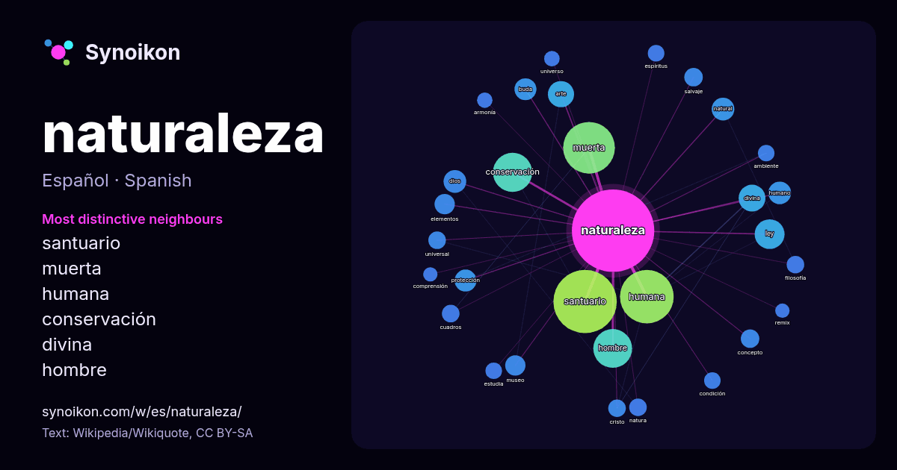

Español · palabra popular
naturaleza
“nature” · Las palabras encontradas a su alrededor en 1273 apariciones de Wikipedia, Wikiquote.

Vecinos más característicos
- santuario 102×
- muerta 74×
- humana 68×
- conservación 37×
- divina 21×
- hombre 17×
- buda 14×
- ley 12×
- protección 11×
- salvaje 10.0×
- natura 9.9×
- dios 9.8×
- humano 9.0×
- estudia 8.5×
- arte 8.3×
- concepto 8.2×
- universal 8.1×
- natural 8.1×
- cristo 8.0×
- armonía 7.6×
× = cuántas veces más que en el texto general de Wikipedia.
Vecinos más frecuentes
- santuario 117
- humana 84
- muerta 78
- conservación 45
- hombre 44
- ley 26
- divina 21
- arte 20
- forma 17
- derechos 15
- dios 15
- humano 15
- natural 15
- buda 14
- obra 14
- protección 14
- centro 13
- elementos 12
- estudio 12
- fuerzas 12
En contexto
- incluye también a los humanos. La naturaleza se extiende desde el mundo subatómico al galáctico. La palabra «naturaleza» procede del latín natura que significa Wikipedia snippets · Naturaleza
- la Naturaleza» («International Union for the Preservation of Nature», IUPN) por el de «Unión Internacional para la Conservación de la Naturaleza y sus Wikipedia snippets · Unión Internacional para la Conservación de la Naturaleza
- La filosofía de la naturaleza, a veces llamada filosofía natural o cosmología, fue el estudio filosófico de la naturaleza y el universo físico que era Wikipedia snippets · Filosofía de la naturaleza
- Se denomina naturaleza salvaje (o naturaleza silvestre o naturaleza indómita) a todo entorno de la Tierra que no ha sido significativamente modificado Wikipedia snippets · Naturaleza salvaje
- El Fondo Mundial para la Naturaleza (en inglés World Wildlife Fund for Nature) es una organización no gubernamental fundada en 1961 que se encarga de la Wikipedia snippets · Fondo Mundial para la Naturaleza
- Protección de la Naturaleza (SEPRONA) es una especialidad de la Guardia Civil de España, encargada de velar por la conservación de la naturaleza y los recursos Wikipedia snippets · Servicio de Protección de la Naturaleza
- fotográficas. Se trata de un tipo de fotografía de naturaleza en la que se captan grandes escenarios de la naturaleza. Suelen utilizarse objetivos de gran angular Wikipedia snippets · Fotografía de naturaleza
- Frida: naturaleza viva es una película mexicana dirigida por el cineasta mexicano Paul Leduc, protagonizada por la actriz Ofelia Medina. Película de bajo Wikipedia snippets · Frida, naturaleza viva
Más palabras
- agua
- arte
- bosque
- caballo
- camino
- campana
- canción
- ciencia
- ciudad
- clima
- comida
- corazón
- desierto
- dinero
- dios
- espejo
- estrella
- familia
- fuerza
- gato
- historia
- invierno
- isla
- jardín
- lengua
- lluvia
- madre
- mapa
- miel
- montaña
- muerte
- oro
- otoño
- pan
- perro
- puente
- reloj
- sal
- salud
- silencio
- sombra
- tiempo
- tormenta
- trabajo
- tren
- té
- verano
- verdad
- vida
Precalculado el 2026-10-09 con los ajustes predeterminados (±5 palabras, corpus mediano). El mapa interactivo puede actualizarlo con datos en vivo.
Interfaz traducida automáticamente; se agradecen correcciones.